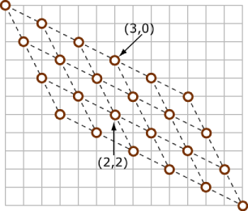

The small dataset can be solved by simple, two-dimensional dynamic programming. In fact, this is obviously the easiest dataset most of the contestants found in this round, with 884 correct submissions. Quite on the contrary, the large dataset turns out to be the most difficulty for this round, solved by only 32 contestants.
Below we outline three tricks one may use in this problem.
Most people are familiar with lattice walks from (0, 0) to (m, n), where each step one can either increase row by 1 or increase column by 1. The total number of such walks is the binomial number (m+n) choose n. One simple reason is that the set of paths is bijective to the ways you choose m steps for vertical moves among the (m+n) steps.
If there are no rocks, one can see that the situation in this problem is quite similar. In fact, they are essentially the same. After a nice transformation of the input, we can forget about the knight and focus on the normal lattice walks.
In our problem, the two kinds of moves the knight can make correspond to the
vectors
r' (2, 1) + c' (1, 2) = (r, c) - (1, 1).
Solving, we get r+c = 2 mod 3, and
r' = r - 1 - (r+c-2)/3, and c' = c - 1 - (r+c-2)/3.
We illustrate using the following picture.
When reading the input, we can transform the points to the new system, and throw away any points that are not reachable. Assume the destination is reachable, otherwise we can simply output 0. We can also disregard any rock with row number or column number that exceeds the destination. In short, we are now in a rectangular lattice in the new coordinate system.
Notice that there is an important restriction in our problem: there are at most 10 rocks. The key idea to our solution -- although other solutions are possible as well -- is the inclusion-exclusion principle.
Let S be any subset of rocks (including the empty set). Define f(S) to be the number of ways we can walk from the origin to destination and hitting every rock in S, and possibly hitting some other rocks.
Number of paths that do not hit any rock = ΣS f(S) (-1)|S|.
Also note: we refer to the Round 1C problem Ugly Numbers. There we needed to consider the multiples of 2, 3, 5, and 7. Some solutions can be viewed as an application of the inclusion-exclusion principle, although this is not necessary for solving that problem.
Now we need to calculate f(S) for any S. Let's sort rocks in S from left to
right, and for rocks on the same column, pick the higher one first. It should
be clear that if some later rock is higher than some earlier ones, then f(S) =
0 -- there is no way to hit all the rocks in S.
Otherwise, the sorted set S forms a chain from the top-left corner to the
lower-right corner
(0, 0) =: (r0, c0) → (r1, c1) → ... → (rk+1, ck+1) := destination
We can view any path hitting all the k rocks as (k+1) stages. f(S) is the product of the number of ways we can do each stage. (This is another important counting principle. It is so important and obvious that usually people don't call it by name. But it does have a name -- the multiplication rule.)
Now, we are back to the classical problem in the beginning of this analysis.
Let
So, is this the end of the story? Not yet. Many contestants failed this
problem because it is tricky to compute A choose B mod 10007 quickly and
correctly. In this problem, both A and B can be on the order of
108. To compute A choose B mod P for a prime number P, one needs
some tricks. There are many clever ways you can find, like pre-computing N!
for all N, pre-computing the inverse of each number mod P, utilizing the
periodicity of the numbers in factorials.
What we want to introduce below is a nice theorem that is not as well known as
it should be. It removes all the worries about the multiples of P. It is not a
difficult theorem, but looks very cute and especially useful for this problem.
Lucas' Theorem: Suppose (ntnt-1...n0) and (ktkt-1...k0) are the representation of n and k in base P, where P is a prime number. Then (n choose k) is the product of (ni choose ki) in ZP.
The following is the choose function from Reid's beautiful Haskel code.
choose :: Int -> Int -> Int10007
choose n k | k > n = 0
choose n k | n < 10007 =
product [ (fromIntegral i) :: Int10007 | i <- [n-k+1..n] ]
/ product [ (fromIntegral i) :: Int10007 | i <- [1..k] ]
choose n k = choose qn qk * choose rn rk
where (qn, rn) = n $$$\mathbf{divMod}$$$ 10007
(qk, rk) = k $$$\mathbf{divMod}$$$ 10007
The inclusion-exclusion principle -
Lucas' Theorem -
Staircase walk
For the study of lattice points, we refer to any standard text in Discrete
Geometry.